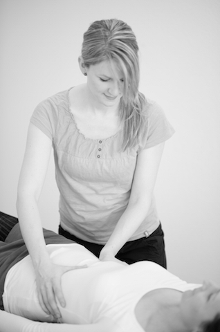
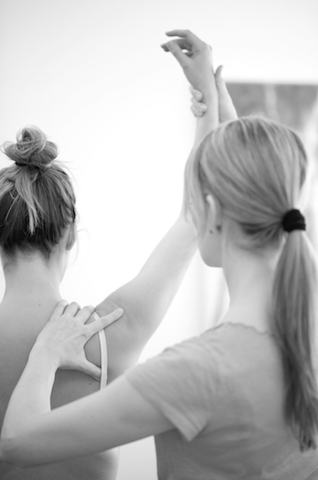
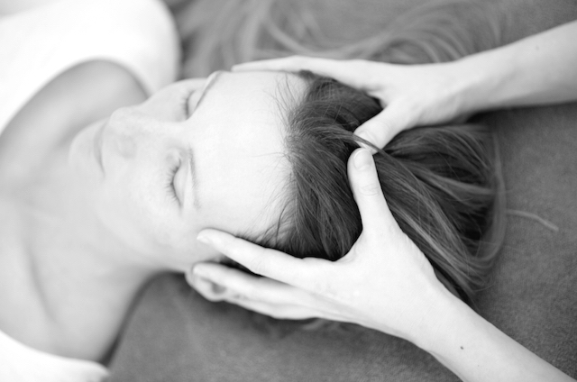
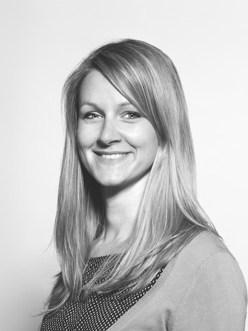

Craniosacral Therapie & Physiotherapie · Winterthur
Gleichgewicht zwischen Körper, Seele und Geist.
Sanfte Begleitung für Babys, Kinder, Schwangere und Erwachsene — in der Praxis am Oberen Graben in Winterthur und bei Ihnen zu Hause.
Anerkannt von
Schwerpunkt
Vom ersten Lebenstag an begleitet.
Cranio für Babys & Kinder
Zur Unterstützung nach der Geburt, bei häufigem Schreien, Koliken, Schlafproblemen oder chronischen Mittelohrentzündungen. Förderung der motorischen Entwicklung. Die sehr feine, langsame Behandlungsart eignet sich für die Arbeit mit Babys ebenso wie mit Erwachsenen.
Schwangerschaft
Zur Unterstützung bei der Schwangerschaft und nach der Geburt. Craniosacraltherapie kann Frauen während dieser besonderen Lebensphase dabei unterstützen, ihren Körper bewusst wahrzunehmen, zur Ruhe zu kommen und sich auf die Geburt vorzubereiten.
Zu Hause
Domizilbehandlungen in Winterthur, Glattbrugg, Opfikon und den angrenzenden Gemeinden — auch im Alters- oder Pflegeheim.

Craniosacral Therapie
Für jedes Alter geeignet
Craniosacral Therapie ist eine manuelle Behandlungsform, deren Ursprünge in der Osteopathie liegen. Es ist eine ganzheitliche und effiziente Körpertherapie, die auf allen Ebenen des menschlichen Seins ausgleichend wirkt. Blockaden im Bindegewebe, in den Gelenken, im Schädel und in den Hirn- und Rückenmarkshäuten werden durch diese sehr feine, langsame Behandlungsart gelöst.
Daher eignet sie sich für die Arbeit mit Babys und Erwachsenen; beispielsweise nach Unfällen, Verletzungen, emotionaler Überflutung oder psychischer Überreizung.
Ziel der Craniosacralen Therapie ist, die Selbstheilungskräfte im Körper anzuregen, um ein bestmögliches Gleichgewicht zwischen Körper, Seele und Geist herzustellen.
Wann kann Craniosacral Therapie angewendet werden?
Beschwerden des Bewegungsapparates
Nacken-, Rücken-, Schulter-, Arm-, Bein- und Kieferbeschwerden (nächtliches Zähneknirschen), Sehnenentzündungen, Schmerzen, Ausheilen von Verletzungen und Gewebetraumata (nach Operation, Unfall oder Geburt)
Cranielle Probleme
Kopfschmerzen, Migräne, Schleudertrauma, Schwindel, chronische Mittelohrentzündung, Stirn- und Nebenhöhlenprobleme
Viscerales System
Verdauungsprobleme, Atembeschwerden, zur Unterstützung bei der Schwangerschaft und nach Geburt

Physiotherapie
Physiotherapie hat zum Ziel, die Bewegungs- und Funktionsfähigkeit des Körpers zu erhalten oder wieder zu erlangen. Aktive und passive Behandlungsformen können Schmerzen beseitigen, physiologische Bewegungsabläufe unterstützen, muskuläre Dysbalance ausgleichen und die motorische Entwicklung fördern.
Angebot
- Physiotherapie bei neurologischen Grunderkrankungen wie MS (Multiple Sklerose), Parkinson oder nach Schlaganfall
- Physiotherapie nach Verletzungen oder degenerativen Prozessen des Bewegungsapparates
- Triggerpunkt- und DryNeedling – Therapie
- Prävention
Domizilbehandlung
Die Domizilbehandlung ist eine besondere Dienstleistung der Physiotherapie. Eine körperliche Behinderung, der momentane Gesundheitszustand oder andere Gründe, können Sie daran hindern in die nächste Physiotherapie-Praxis zu gelangen. In solchen Situationen komme ich gerne zu Ihnen nach Hause. Eine Domizilbehandlung beinhaltet auch, dass meine Therapie in Ihrem Alters- oder Pflegeheim stattfinden kann. Domizilbehandlungen führe ich in Winterthur, Glattbrugg, Opfikon und den angrenzenden Gemeinden durch.
Bei einer ärztlich verordneten Domizilbehandlung werden die Zusatzkosten durch die Grundversicherung übernommen.


Über mich
Durch meine langjährige Tätigkeit als Physiotherapeutin in der Neurorehabilitation habe ich gelernt, wie wichtig es ist den Menschen mit allen seinen Facetten zu betrachten. Der Einklang des Körpers, der Seele und des Geistes ist die Grundlage für den individuellen Heilungsprozess. Mit der craniosacralen Therapie habe ich für mich einen weiteren Ansatz gefunden, um Ihnen eine ganzheitliche Behandlung und Rehabilitation anbieten zu können.
Ausbildung
2006 Dipl. Physiotherapeutin HF, Physiotherapieschule Schaffhausen
2012 Anerkennung zur Dipl. Physiotherapeutin FH
2014 Dipl. Craniosacral Therapeutin, RehaStudy Zurzach
2018 Craniosacral Therapeutin, Komplementär Therapeutin mit Branchenzertifikat OdA KT
2022 KomplementärTherapeutin mit eidgenössischem Diplom
Berufliche Tätigkeit
Ich verfüge über eine langjährige Berufserfahrung. Von 2006 bis 2013 habe ich in den Kliniken Valens gearbeitet. Dort habe ich mich auf die Behandlung neurologischer Krankheitsbilder wie Multiple Sklerose, Parkinson und Hemiplegie nach Schlaganfall spezialisiert. Ebenfalls verfüge ich über ein vertieftes Wissen in der Behandlung von Beschwerden mit dem Bewegungsapparat wie beispielsweise Rückenschmerzen, Migräne, Sportverletzungen etc.
2013 bis 2025 habe ich als selbständige Physiotherapeutin und Craniosacraltherapeutin im interdisziplinären Therapiezentrum HandinHand in Zürich gearbeitet. Seit 2013 betreue ich Patienten in Domizilbehandlungen/Hausbesuchen in Glattbrugg und Umgebung. Neu biete ich Domizilbehandlungen auch in Winterthur an.
Seit 2025 bin ich als selbständige Physiotherapeutin und Craniosacral Therapeutin in der Physiotherapie Oberer Graben in Winterthur.
Weiterbildungen
| 2025 | Die Schwangerschaft in der Craniosacralen Therapie, Cranioschule KmG |
| 2023–2024 | Behandlungen der Wirbelsäule in der Craniosacralen Therapie, Cranioschule KmG |
| 2021 | Craniosacral Therapie: Pädiatrie in der Craniosacralen Therapie: Entwicklung ab dem 2. Jahr, Sutherland Institute |
| 2019 | Craniosacral Therapie: Pädiatrische Annäherung II, Fortbildung CranioPlus |
| 2018 | Craniosacral Therapie: Pädiatrische Annäherung I, Fortbildung CranioPlus |
| 2018 | Craniosacral Therapie: Wahrnehmen mit allen Sinnen III, Staiger GbR |
| 2018 | Traumatologie 1 in Theorie und Praxis, Upledger Institut Schweiz |
| 2018 | Assistenz: Die Bedeutung der Faszien für Statik und Motorik, RehaStudy |
| 2017 | Hospitation: Update für Craniosacral Therapeuten: Psychoneuroimmunologie, RehaStudy |
| 2017 | Hospitation: Das Kiefergelenk und das Craniomandibuläre System, Akademie Dieter Vollmer |
| 2016 | Craniosacral Therapie: Wahrnehmen mit allen Sinnen II, Staiger GbR |
| 2015–2017 | Cranio-Sacrale Ergänzungsausbildung, RehaStudy Zurzach — Ausbildung hinführend zum Branchenzertifikat Komplementär Therapeut in Craniosacral Therapie mit eidgenössischem Diplom |
| 2015 | Craniosacral Therapie: Wahrnehmung mit allen Sinnen I, Staiger GbR |
| 2011 | Advanced-Kurs „Bobath-Konzept“ (IBITA anerkannt), Rheinburg Klinik |
| 2009–2010 | Diplom: Dry Needling Therapeutin DVS |
| 2008 | Craniomandibuläre Dysfunktionen, Kliniken Valens |
| 2008 | Befundaufnahmen und Behandlung im Bereich des Gesichtes und des Oralen Traktes – Grundlage, Kliniken Valens |
| 2007–2008 | Zertifikat: Grundkurs „Bobath-Konzept“ (IBITA anerkannt), Kliniken Valens |
| 2007 | Internationale Aquatic Therapy Course Valens, Kliniken Valens |
Preise
Craniosacral Therapie
Ich bin Craniosacraltherapeutin mit dem Abschluss Komplementärtherapeutin OdaKT mit Branchenzertifikat und eidgenössischer Höherer Fachprüfung HFP. Für Abklärungen mit dem Versicherer benötigen Sie meinen Namen oder meine Registrierungsnummer im Zahlenregister ZSR-NR. W674062
Selbstzahler
| 40–45 Minuten | CHF 126.00 |
| 55–60 Minuten | CHF 154.00 |
pro weitere 5 Minuten 14.00 Franken (Tarif 590)
Physiotherapie
Für die Physiotherapie können Sie sich mit einer ärztlichen Überweisung oder als Selbstzahler anmelden. Bei ärztlicher Überweisung läuft die Abrechnung gemäss dem KVG (Krankenversicherungsgesetz) und die Kosten werden von Ihrer Krankenkasse über die Grundversicherung abgegolten, entsprechend Ihrer Franchise und dem Selbstbehalt.
Selbstzahler
| 25–30 Minuten | CHF 70.00 |
| 50–60 Minuten | CHF 140.00 |